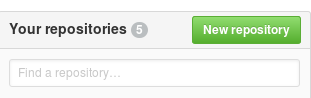
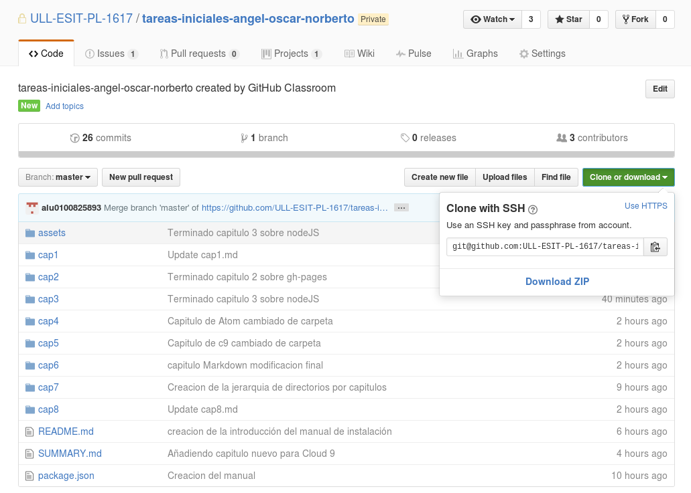

Git-GitHub
Git y GitHub son temas que suelen tratarse juntos a pesar de ser dos cosas distintas. Por un lado tenemos Git, el cual es un software de control de versiones muy popular y potente que nos permite llevar el control de los cambios que hemos hecho en nuestros trabajos a lo largo del tiempo. Por otro lado está GitHub, que es un servicio de alojamiento para repositorios de Git.
Git
La utilización de Git es bastante sencilla en su nivel básico (aunque se puede llegar a hacer bastante compleja), y normalmente no hace falta instalarlo pues muchas distribuciones UNIX lo traen por defecto. En cualquier caso, un sudo apt-get install git bastará para instalarlo. Tambien es recomendable hacer una configuracion básica del usuario para Git.
git config --global user.email "you@example.com"
git config --global user.name "Your Name"
Una vez tenemos git nos situamos con la consola de trabajo en el directorio del cual queremos tener un control de versiones y ejecutamos el comando git init. Con esto ya podemos empezar a controlar las versiones de los ficheros en nuestro directorio.
Cuando ya hemos creado o modificado ficheros dentro de nuestro repositorio, tenemos que agregar estos ficheros modificados a la lista de cambios utilizando el comando
git add filemane
Mas de un fichero se puede añadir simultáneamente.
git add file1 file2
git add directory1
git add .
Notese que esta ultima ejecucion guarda todos los cambios del repositorio si lo ejecutamos desde la carpeta raiz del mismo.
Cuando queremos guardar el estado actual del directorio, ejecutamos el comando que guarda todos los cambios que hemos añadido con git add.
git commit -m "descripción del commit"
Es muy recomendable añadir la opcio -m y su mensaje. En caso contrario se abrirá un editor de texto para que añadamos una descripción, ya que esta es obligatoria.
De esta manera podemos llevar de forma cómoda las versiones de los ficheros en nuestro repositorio personal. Todo esto se complica un poco cuando añadimos trabajo colaborativo y GitHub a la mezcla.
GitHub
GitHub es un servicio gratuito de alojamiento de repositorios git. Esta es una herramienta muy usada por los desarrolladores de código para realizar trabajos colaborativos (e incluso individuales) ya que aplica todo el potencial del git y permite a distintas personas trabajar simultaneamente en el mismo proyecto.
Para registrarse en GitHub simplemente tenemos que registrarnos en la página principal y ya estamos listos para utilizar repositorios remotos. Una vez entramos en la página de nuestra cuenta, podemos crear un nuevo repositorio. 
Tras crear el repositorio, vamos a clonarlo en nuestra máquina local para poder trabajar más comodamente. Para esto vamos a la opción de clonar repositorio y copiamos en enlace ssh que nos dan. 
Y en nuestra máquina local ejecutamos:
git clone git@github.com:linkanuestrorepositorio
Y se nos creará una carpeta con todo lo que contiene el repositorio remoto. Si por otro lado lo que queremos es exportar un repositorio ya existente a GitHub, lo que tenemos que hacer es lo siguiente:
- Creamos un repositorio remoto de la misma manera y copiamos el enlace SSH.
- En nuestro repositorio local ejecutamos
git remote add origin LinkSSH - Ejecutamos el comando
git push origin master
Mientras trabajamos con repositorios remotos se hace necesario actualizar la información en uno y en otro lado, para esto tenemos los comandos git push y git pull.
Git pull nos permite traer los cambios que se han realizado en el repositorio remoto y añadirlos a nuestros ficheros. Para ello especificamos el repositorio y la rama, aunque la sintaxis más común y la que se emplea una vez empiezas a trabajar con GitHub es la siguiente: git pull origin master
Git push es exactamente lo contrario a pull y nos permite añadir los cambios locales al repositorio remoto. En ocasiones habrá errores al hacer un push, pues puede que los ficheros que queremos modificar ya hayan sido modificados en el repositorio remoto. Para arreglarlo, primero hemos de hacer un pull y tras confirmar que los cambios son los que queremos, hacer un push. La sintaxis de push es la misma que la de pull. git push origin master